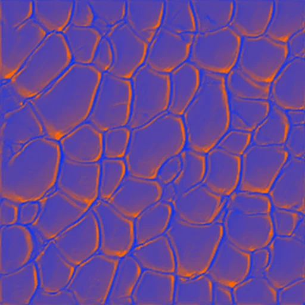
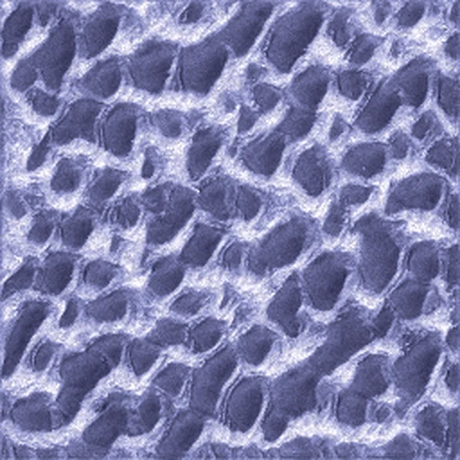
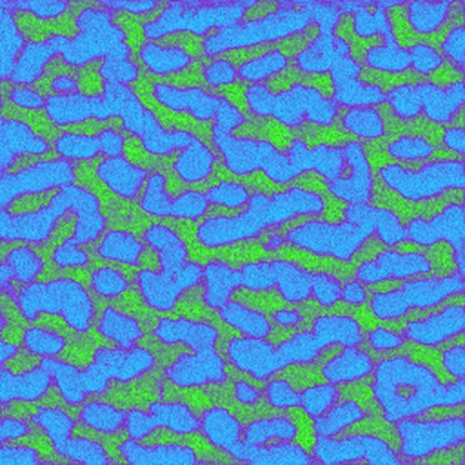
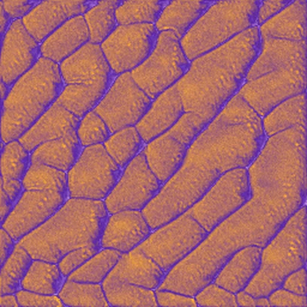
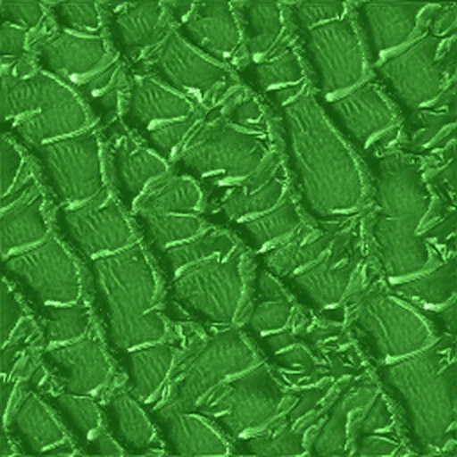
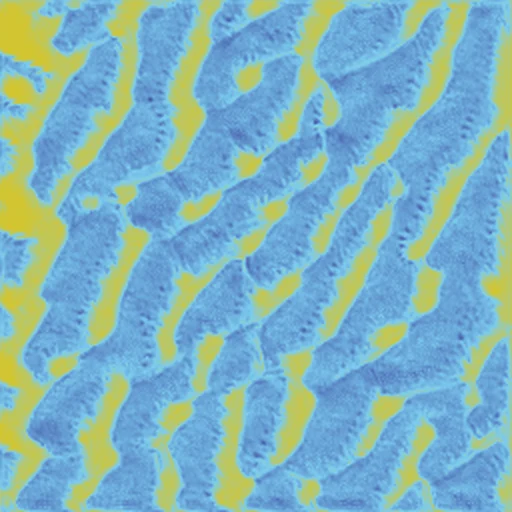

New Natures
A comparative study of three ways to combine neural cellular automata trained on natural textures. Each method tests whether linear mode connectivity, a property studied on image classifiers, holds for models that grow their output. The combinations that held became a series of pattern designs.
Teaching a single cell to grow a pattern, then crossing two together.
A neural cellular automaton grows an image from a single seed. Every cell sees only its immediate neighbours and updates itself with the same small neural network, step after step. Out of that purely local rule a whole pattern emerges, and holds itself stable once grown.
I trained one automaton per natural texture: leopard, coral, dragonfly, condensation and frost. Then I compared three ways of combining two of them into something that grows between both targets. The coherent results became a series of new patterns carrying features of both parents.
I framed the output as pattern-making in the tradition of Owen Jones, Ernst Haeckel and William Morris: motifs meant to be used, not images meant to be looked at once.
Can two separately grown patterns meet in the middle?
Linear mode connectivity is the finding that two networks trained from a shared starting point can often be joined by a straight line in weight space, and every model along that line still works. It has been studied almost entirely on classifiers. I wanted to know whether it holds for neural cellular automata, where the network does not label an image but grows one, step by step, through many repeated updates.
The prediction is simple and visible. If connectivity holds, a blend of two automata grows a coherent pattern between them. If it fails, the blend collapses into noise. So each combination either grows into something legible or it does not, and the patterns become the measurement.
Three ways to combine two automata, three different answers.
Each method tests connectivity from a different angle. The theory predicts that the two methods with a shared starting point should work, and the one without should fail. Every result was graded by eye as coherent, degraded or failed.
Multi-target training
One automaton learns both patterns at once, with a signal input telling it which way to lean. Sliding the signal sweeps from one parent to the other inside a single model.
This is the method the live exhibition runs, because one model can render every blend in real time.
Fine-tuning interpolation
Two models are fine-tuned from the same shared checkpoint, one per pattern, and their weights are mixed by a factor m. Because they began from a common point, the line between them stays low-loss.
The central result: linear mode connectivity carries over from classifiers to neural cellular automata.
Independent interpolation
Two automata trained fully independently, from different random starts, are mixed the same way. With no shared origin, nothing keeps the line between them low-loss.
The failure is the control. It is what the theory predicts, and it shows the shared start in Method 2 is doing the work.
What the loss says along the line.
Alongside the visual grading, I measured each blend's style loss to both parents across the whole mixing range, and the loss barrier: how far a blend's loss rises above a straight line drawn between its two parents. Low barriers mean the path between two models stays low-loss, the signature of linear mode connectivity.
The blends that hold together are the finding.
Read across the three methods, the results line up with the prediction. Both methods that share a starting point, whether by training one model jointly or by fine-tuning from a common checkpoint, produce blends that keep both parents legible across the sweep. The method with no shared origin never does. For a model that grows its output instead of classifying it, connectivity behaves the way the theory says it should.
What makes the result legible without a chart is that the patterns are the evidence. A failure is unmistakable on sight. The works below are combinations that came through as coherent, so the imagery and the machine-learning claim are the same object.
Six combinations that held.






Combine two patterns yourself, grown live in your browser.
The exhibition runs the Method 1 models directly in the browser. Pick two of the five textures, move the slider, and a model trained to hold both grows the blend in real time. The gallery there also includes the Method 2 blends and a few failures that went wrong in interesting ways.